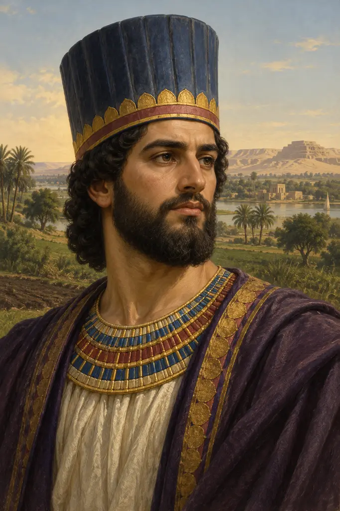
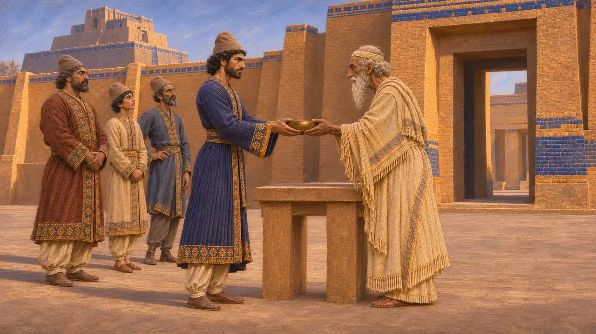
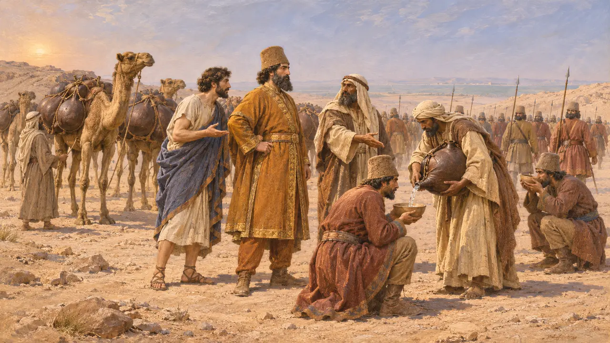
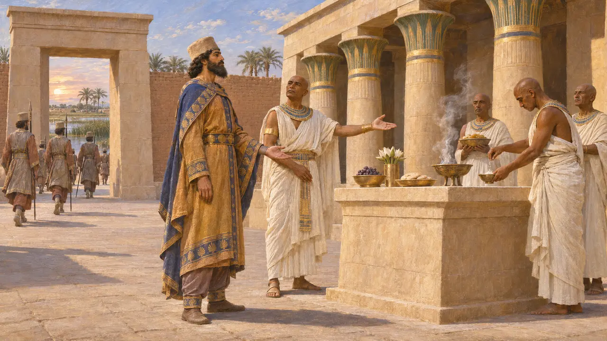
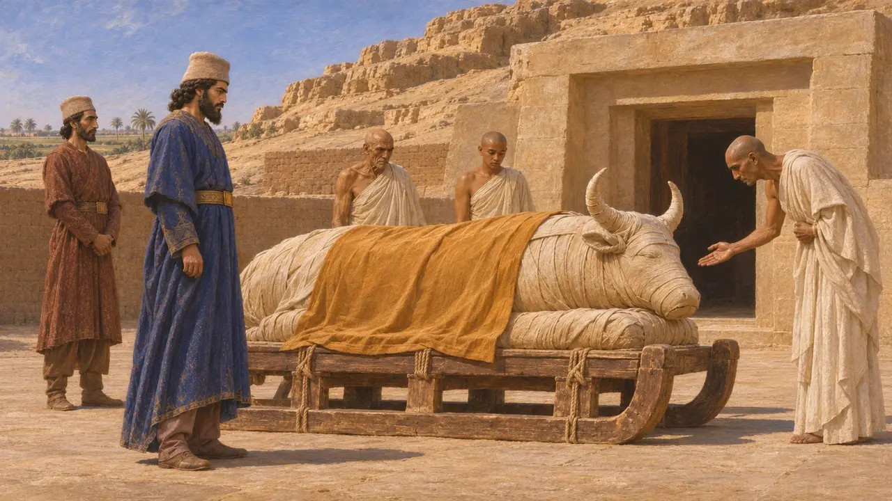
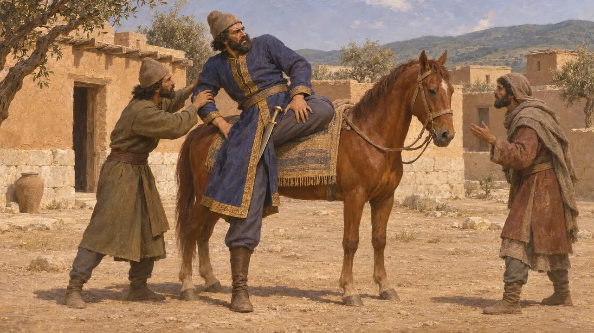

قمبيز
ابن قورش، ملك فارس 530-522 ق.م وفاتح مصر
في اللعبة: المستوى 2: حامل الرمح، المستوى 3: الكذب، المستوى 5: الميثاق
كان قمبيز بن قورش الكبير ملكًا على فارس من 530 ق.م إلى 522 ق.م. ضمّ مصر إلى الإمبراطورية سنة 525 ق.م وحكمها فرعونًا، فأخضع للحكم الفارسي واحدة من أعرق ممالك الشرق الأدنى. وقد صوّرته الرواية اليونانية طاغيةً مجنونًا، بينما تروي النقوش المصرية وسجلّ داريوس نفسه قصصًا مختلفة.
في اللعبة: تدور مرحلة منف عام 525 ق.م، عام فتحه لها. أما عودته إلى بلاده لمواجهة مغتصب للعرش، كما تذكر ملاحظة الحولية، فتتبع رواية هيرودوت؛ في حين يكتفي نقش داريوس بالقول إنه مات بعد أن استولى المجوسي على السلطة.

وريث قورش
في السجلاتتذكر أسطوانة قورش قمبيز ابنًا لقورش وتدعو الإله مردوخ أن يباركه مع أبيه. وتسجّل حولية نبونيد أنه بعد الاستيلاء على بابل عام 539 ق.م، شارك قمبيز بن قورش في طقس بمعبد نابو خلال عيد رأس السنة. وتؤرّخ ألواح بابلية لفترة وجيزة باسمه ملكًا على بابل في حياة قورش، وقد خلف أباه عام 530 ق.م.
Cyrus Cylinder; Nabonidus Chronicle

فتح مصر
رواية قديمةيذكر هيرودوت أن قمبيز زحف على مصر بعون من فانيس الهاليكارناسي، وهو ضابط مرتزق فرّ من خدمة الفرعون أمازيس، ومن ملك عربي زوّده بالماء عبر الصحراء إلى مصر. وقد مات أمازيس قبل الغزو، فلاقى ابنه بسماتيك الثالث الفرسَ قرب بيلوزيوم وهُزم. وحوصرت منف حتى استسلمت؛ ويضيف هيرودوت أن بسماتيك قُتل لاحقاً لتدبيره ثورة.
Herodotus 3.4-15

فرعون مصر
في السجلاتيسجّل تمثال وجاحور رسنت، وهو قائد بحري وطبيب من سايس، أن قمبيز اتخذ لقب عرش فرعونياً هو مسوتي رع، وأنه بطلب من وجاحور رسنت أخرج الجنود الأجانب من معبد نيت وأعاد إقامة طقوسه. وتُظهر لوحة من السرابيوم في سقارة عجل أبيس دُفن في السنة السادسة من حكمه في تابوت قدّمه الملك. وتقدّمه هذه المصادر فرعوناً كرّم الآلهة.
Statue of Udjahorresnet; Apis stela from the Serapeum, Saqqara

جنون قمبيز
متنازع عليهيصف هيرودوت قمبيز بالجنون، قائلًا إنه طعن عجل أبيس، وسخر من آلهة مصر، وقتل أخاه وأخته التي كانت زوجته. غير أن الدفن الملكي لعجل أبيس في عهده لا يتّسق مع رواية الطعن، وإن اختلف الباحثون حول أيّ عجل وأيّ سنة. ويرى كثير من المؤرخين أن هذه الصورة العدائية جاءت من كهنة مصريين أغضبهم تقليصه لموارد المعابد، كما يذكر نص ديموطيقي لاحق، ومن روايات فارسية خدمت داريوس.
Herodotus 3.27-38; P. Briant, From Cyrus to Alexander, 2002

وفاته عام 522 ق.م
متنازع عليهيروي هيرودوت أن خبر مغتصبٍ للعرش بلغ قمبيز وهو في سوريا، فوثب على حصانه فجرح فخذه بسيفه هو، ومات في بلدة تُدعى إكباتانا. ويذكر نقش داريوس في بهستون، كما يذكر هيرودوت، أن قمبيز كان قد قتل أخاه برديا سرًّا، وأن مجوسيًّا يُدعى غوماتا استولى بعد ذلك على العرش، غير أنه لا يقول إلا أن قمبيز «مات ميتته». ويختلف الباحثون في معنى هذه العبارة، وفي ما إذا كان المغتصب هو برديا نفسه في حقيقة الأمر.
Herodotus 3.61-66; DB §10-11
المصادر
- Herodotus, Histories book 3
- Darius I, Behistun inscription (DB)
- Statue of Udjahorresnet
- Apis stela and sarcophagus from the Serapeum, Saqqara
- Cyrus Cylinder and Nabonidus Chronicle
- P. Briant, From Cyrus to Alexander, 2002